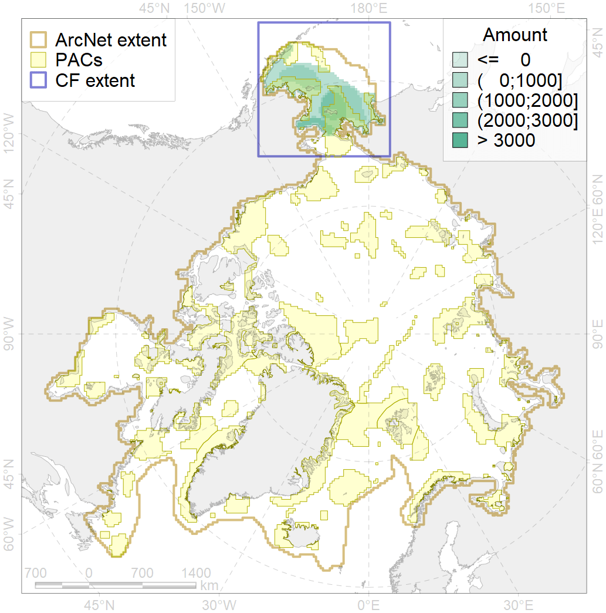
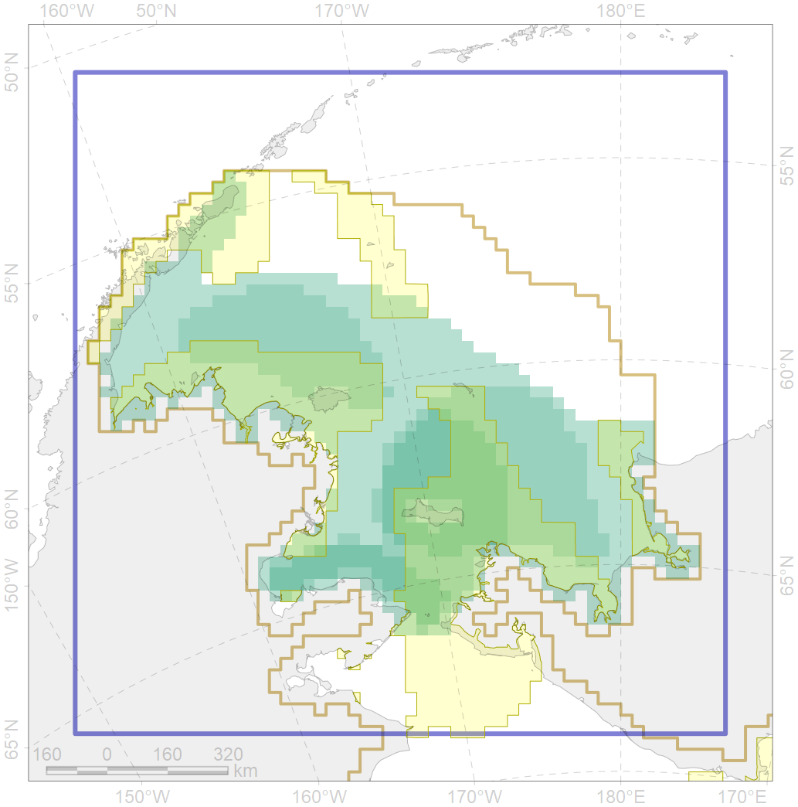

1019

| CF code | 1019 |
| CF name | Pacific Walrus Winter Distribution |
| Time Period | 1982-2016 |
| Source(s) | http://ak.audubon.org/conservation/ecological-atlas-bering-chukchi-and-beaufort-seas |
| Seasonality | October-May |
| Depth Horizon | 0-200m |
| Methodology | Data assembled from multiple datasets |
| Use Restrictions | Open source |
| Author Name | Maria Solovyeva |
| Notes | |
| Scenario’s Target | 0.24 |
| Target Achievement | 0.449 (Scenario: 187.2%) |
| PAC | Share of the Total Amount within the PAC | Share of the Target Achievement for the ArcNet | PAC’s Contribution to the Target Achievement |
|---|---|---|---|
| 1 | 0.8% | 3.2% | 1.7% |
| 2 | 0.5%0.5% | 1.0%1.1% | 0.6%0.6% |
| 3 | 12.0%12.7% | 46.2%47.9% | 24.7%25.6% |
| 4 | 1.7%2.0% | 5.7%6.8% | 3.0%3.6% |
| 5 | 29.3%29.7% | 113.6%115.0% | 60.7%61.4% |
| inner | 44.2%45.6% | 169.7%173.9% | 90.7%92.9% |
| outer | 55.8%60.3% | 17.5%32.3% | 9.3%17.2% |
| † supplement values are for area consistence whereas principal values are for Accenter compatible gridded stats |